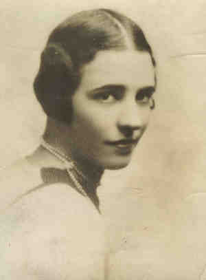

|
|
| 
Caro (Sybil) SHAW (1904-1988) |
Caro (Sybil) SHAW 242,243
Noted events in her life were: • Census, 12 Apr 1930, New York, New York Co., New York, USA. 221 Caro married Dave Hennen CODDINGTON, son of Charles Egbert CODDINGTON and Lily Adolphina Gordon BROWN, on 31 Jan 1928 in Ritz Carlton Hotel, New York, New York Co., New York, USA.232 (Dave Hennen CODDINGTON was born on 31 Jan 1886 in New York, New York Co., New York, USA,207,234 died on 26 Jun 1956 in New York, New York Co., New York, USA and was buried in Woodlawn Cmty, New York, New York Co., New York, USA 235.). The cause of his death was prostate cancer. Noted events in their marriage were: • Divorce: Reno, Storey Co., Nevada, USA. Marriage Notes: Married by Rev. Dom Leonard Sargent, O.S.B. Headmaster of Portsmouth Priory Catholic School Caro next married William Liseter AUSTIN Jr., son of William Liseter AUSTIN and Mary ROGERS, on 20 Jul 1938 in Rosemont, Montgomery Co., Pennsylvania, USA.3410 (William Liseter AUSTIN Jr. was born on 21 Jul 1899 in Philadelphia, Philadelphia Co., Pennsylvania, USA 3412,3413 and died on 11 Feb 1963 3413.) Noted events in their marriage were: • Marriage Notice, 21 Jul 1938. Caro next married Don GEARHART on 4 Feb 1966 in New York, New York Co., New York, USA.3411 |
Search using Google Custom Search:
Table of Contents | Surnames | Name List
This website was created 2 Mar 2025 with Legacy 10.0, a division of MyHeritage.com; content copyrighted and maintained by coddgenealogy at gmail d0t com